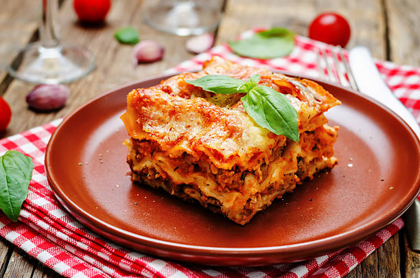

LASAGNA

A rich and creamy whole-wheat pasta dish filled layer by layer
"Lasagna is a baked casserole made with wide flat pasta and layered with fillings
such as ragú, bechamel, vegetables and various cheeses".
Unsurprisingly, every Italian region has its own traditional recipe.
INGREDIENTS
- 2 teaspoons extra virgin olive oil
- 1 pound ground beef chuck
- 1/2 medium onion, diced (about 3/4 cup)
- 1/2 large bell pepper (green, red, or yellow), diced (about 3/4 cup)
- 2 cloves garlic, minced
- 1 (28-ounce)can good-quality tomato sauce
- 3 ounces tomato paste (half a 6-ounce can)
- 1 (14 ounce) can crushed tomatoes
- 2 tablespoons chopped fresh oregano, or 2 teaspoons dried
oregano
- 1/4 cup chopped fresh parsley (preferably flat leaf), packed
- 1 tablespoon Italian seasoning
- 1 pinch garlic powder and/or garlic salt
- 1 tablespoon red or white wine vinegar
- 1 tablespoon to 1/4 cup sugar (to taste, optional)
- Salt
How to Make Lasagna?
STEPS ON HOW TO MAKE LASAGNA:
- Start by making the sauce
With ground beef, bell peppers, onions, and a combo of tomato sauce, tomato paste,
and crushed tomatoes.
The three kinds of tomatoes gives the sauce great depth of flavor.
- Let this simmer while you boil the noodles and get the cheeses ready
We're using ricotta, shredded mozzarella, and parmesan -- like the mix of tomatoes,
this 3-cheese blend gives the lasagna great flavor!
- From there, it's just an assembly job
A cup of meat sauce, a layer of noodles, more sauce, followed by a layer of cheese.
Repeat until you have three layers and have used up all the ingredients.
Bake until bubbly and you're ready to eat!!